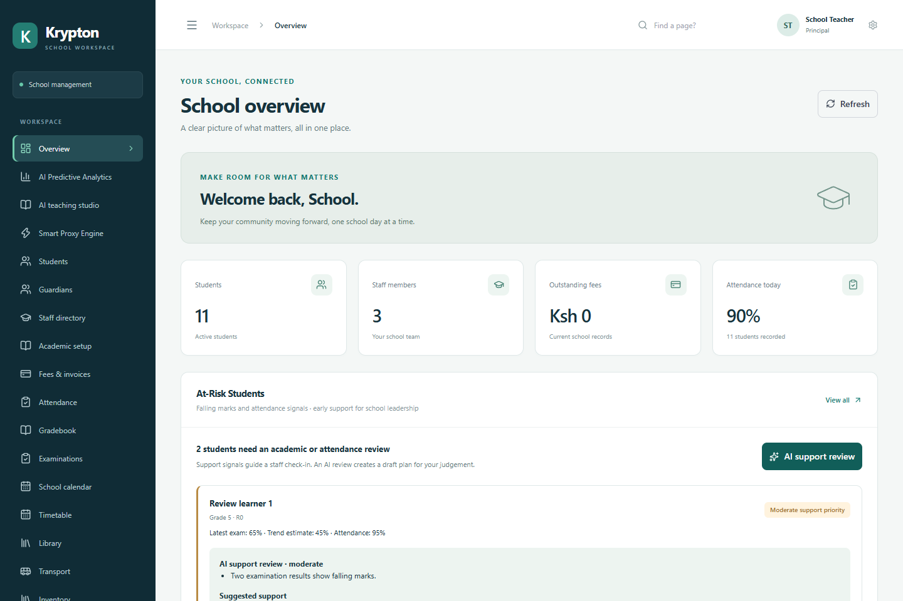
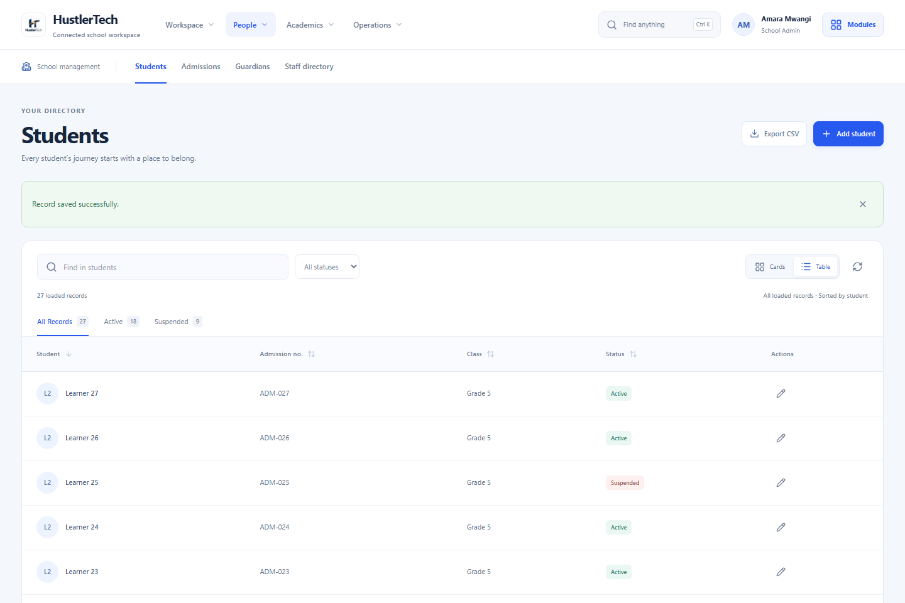

1. Dedicated Institutional Model (Single School & Multi-Branch Trust)
Unlike generic public SaaS platforms where hundreds of unrelated schools share the same database and servers, Krypton School ERP is deployed as a dedicated, private enterprise system exclusively for your institution.
How the Single School & Multi-Branch Architecture Works:
- Single Campus Schools: Complete end-to-end administration, academics, WhatsApp messaging, bus routing, and security dedicated to your single campus.
- Multi-Branch Educational Trusts & Groups: One unified institution database connecting your Central Head Office (HQ / Trust Board) with all branch campuses (e.g., Main Campus, City Branch, Kindergarten Campus, Secondary School).
- Total Data Sovereignty: Your student databases, fee ledgers, exam papers, and staff payroll belong 100% to your institution, hosted on your dedicated private cloud or local campus servers.
2. Why This Dedicated Model Outperforms Generic Public SaaS
| Dimension | Generic Public SaaS Portals | Krypton Dedicated Institutional Model |
|---|---|---|
| Deployment & Ownership | ❌ Public shared SaaS pool; student data co-mingled with unrelated institutions. | ✅ 100% Dedicated Institutional Server; custom school domain (e.g. erp.yourschool.edu.in); complete data ownership. |
| Multi-Branch Governance | ⚠️ Forces each branch to buy a separate SaaS subscription with zero cross-campus synergy. | ✅ Central Trust HQ Dashboard: Consolidated fee roll-up, 1-click inter-branch student transfer, and central faculty allocation. |
| Parent & Student Chat | ❌ None or chaotic WhatsApp groups where teacher mobile numbers are exposed. | ✅ Inbuilt Secure Chat Hub: 1-on-1 parent-teacher chat, doubt-clearing threads, voice/video calls, and screen sharing. |
| Live Virtual Classes | ❌ Unintegrated links requiring external Zoom/Google Meet licenses. | ✅ Integrated Interactive Classroom: Collaborative digital whiteboard, digital hand-raising, and recorded lectures. |
| Teacher AI Copilot | ❌ No AI assistance; manual typing of schemes of work and exam papers. | ✅ Built-in AI Copilot: NEP/CBSE lesson plans, quizzes, rubrics, and bilingual (Malayalam/English) progress remarks. |
| Transit Fleet Routing | ⚠️ Fixed manual lists; expensive third-party GPS vendor lock-in. | ✅ Dynamic Geocoded Route Planner: Search any campus location in India; auto-detects nearby stops, computes road km, and schedules morning pickup backwards. |
| Official WhatsApp Hub | ❌ Costly, ignored SMS (12% read rate) or clunky app installs. | ✅ Official Meta WhatsApp Cloud API: 1-click UPI fee payments, digital receipts, absent alerts, and PDF report cards on WhatsApp. |
| Campus Hardware Security | ❌ Software vendors unable to install or support physical gates and cameras. | ✅ Direct Security Integration by OM System & Service: RFID turnstiles, biometric gates, campus CCTV, and network infrastructure. |
3. Complete Master Feature Directory
Every enterprise capability delivered out-of-the-box for your school and its branches:
Seamlessly unifies single campuses or multi-branch educational societies under one digital roof:
- Central Group/Trust Command Center: Chairman, Secretary, and Academic Directors view consolidated student census, staff ratios, and financial collection velocity across all branches.
- Branch Autonomous Campuses: Each branch operates with full autonomy (Branch Principal, Vice-Principal, Teachers, Timetables, and Bank Accounts).
- 1-Click Inter-Branch Student Transfer: Instant student migration between branches with automatic transfer of academic history, marks, and fee ledgers (no paperwork).
- Consolidated Trust Financial Reporting: Group-wide revenue, term fee collection aging, and expenditure reconciliation across branches.
- Unified Multi-Campus Parent Account: Single login for parents with children studying in different branches (e.g., primary branch and senior secondary branch).
- Cross-Branch Faculty Allocation: Flexibility to re-allocate or substitute specialist teachers between sister campuses.

A secure in-app communication and virtual teaching engine protecting teacher privacy:
- Inbuilt Real-Time Chat Hub: Secure instant messaging between parents, teachers, and school admin with read receipts.
- Student-Teacher Doubt-Clearing Channel: Safe, moderated academic threads for homework and subject questions with media/document attachments.
- Voice & Video Calling: High-definition browser-based 1-on-1 and group voice/video calls without installing third-party apps.
- Screen Sharing Engine: Teachers can broadcast textbooks, slide presentations, or exam solutions directly to student screens.
- Interactive Classroom Whiteboard: Collaborative digital chalkboard/whiteboard featuring pens, highlighters, geometric shapes, and instant blackboard note downloads.
- Live Online Classrooms: Scheduled interactive virtual classes with digital hand-raising, live class attendance capture, and lecture recordings for student revision.
- Virtual PTM Conference Suite: Scheduled 1-on-1 parent-teacher video meetings with digital waiting rooms and live on-screen report card inspection.
- Canned Quick Replies: Standardized one-tap response templates for teachers (*"Acknowledged"*, *"Fee statement received"*, *"Assignment verified"*).
Eliminate 75% of administrative workload for educators with built-in generative AI:
- AI Lesson Plan Generator: Instantly creates structured weekly/term lesson plans mapped to CBSE, ICSE, and Kerala State Board standards.
- Automated Assessment & Quiz Creator: Generates balanced question banks (MCQs, short answer, critical thinking) complete with answer keys and rubrics.
- Bilingual Student Remarks AI: Drafts personalized, encouraging report card remarks in Malayalam and English tailored to each student's progress.
- Smart Automated Timetable Engine: Generates conflict-free class timetables factoring in teacher workloads, subject frequency, and lab sessions.
- Automated Teacher Substitution: Re-allocates free periods and assigns substitute teachers automatically when a staff member applies for leave.

High-engagement, automated WhatsApp alerts powered directly by Meta's Cloud API:
- Interactive Fee Reminders: Push fee notices with 1-tap UPI / net-banking checkout links and instant PDF receipt delivery on WhatsApp.
- 9:15 AM Daily Absent Alerts: Automatic absent notifications to parents with interactive response buttons (*"Sick"*, *"Family Reason"*).
- Digital Report Card Delivery: Dispatches term exam report card PDFs directly to the parents' registered WhatsApp numbers.
- Emergency Campus Circulars: Instant broadcast for sudden weather alerts, holiday notices, or school event reminders.
Smart transit management that works for any campus or branch location across India:
- Location-Agnostic Campus Geocoding: Search any Indian town, city, or village (Kollam, Kottarakkara, Kochi, etc.) to set campus GPS coordinates.
- Live Nearby Stop Search: Search and add nearby transit stops; the system computes exact road distances (km) automatically.
- Reverse Morning Pickup Scheduler: Reversely computes stop pickup times based on the morning assembly bell timing.
- Live Bus Tracking & Proximity Alerts: Parents receive live GPS notifications when the school bus is within 500 meters of their stop.
- Driver App & Passenger Manifest: Mobile dashboard for drivers showing student pickup lists, emergency contacts, and attendance.
Eliminate paper certificate fraud with mathematical verification:
- Transfer Certificates (TC): Formatted to CBSE and State Board layouts with serial numbers, conduct, and reason for leaving.
- Bonafide & Conduct Certificates: Generated on official school crest letterhead with one click.
- Principal's Digital Signature: Embedded cryptographically signed signature image with SHA-256 hash stamp.
- Public Instant QR Verification: Embassies and colleges scan the certificate QR code to view live, tamper-proof verification on your school domain.
- Digital Student & Staff ID Cards: Automated photo ID card generation with emergency contacts, blood group, and student barcodes.
Turn applicant inquiries into enrolled students through a systematic pipeline:
- Visual Kanban Funnel: Drag-and-drop applicants from *Inquiry → Document Verification → Entrance Assessment → Principal Interview → Fee Paid → Enrolled*.
- Multi-Channel Lead Ingestion: Captures admission inquiries from website forms, social media campaigns, and walk-in front desk entries.
- Branch-Level Admission Routing: Inquiries are automatically routed to the requested campus branch based on parent location preference.
- One-Click Student Enrollment: Automatically converts accepted applicants into active students with admission number, class section, and fee account.

Streamlined fee collections with multi-child unified carts and automated ledger reconciliations:
- Multi-Child Single Cart Checkout: Parents pay fees for multiple children across different classes or branches in one single transaction.
- Multi-Gateway Payment Integration: Direct support for Razorpay, Cashfree, PayU, and instant UPI QR payments mapped to branch bank accounts.
- Automated Fee Structures: Flexible fee heads (Tuition, Transport, Science Lab, Sports, Term Exam, Uniforms).
- Concession & Scholarship Workflows: Multi-tier approval system for merit scholarships, sibling discounts, and staff fee waivers.
- Defaulter Aging & Automated Recovery: Detailed aging breakdown of pending dues with automated WhatsApp recovery notices.
- Staff Payroll & Payslips: Salary structure calculation with PF/ESI deductions, allowance rules, and printable payslips.
Intervene before a student falls behind with proactive machine learning insights:
- Dropout Risk Predictor: Identifies students at risk of discontinuation 3 to 6 weeks in advance based on attendance and behavioral vectors.
- Academic Performance Forecasting: Correlates homework completion, periodic tests, and class engagement to predict board exam scores.
- Targeted Remedial Guidance: Automatically highlights specific subject chapters where a student needs extra coaching.

Seamless bridge between educational software and physical campus security infrastructure:
- RFID Turnstiles & Smart Gates: Automated student entry/exit logging with immediate WhatsApp notification to parents.
- Biometric Staff Attendance: High-speed facial recognition and fingerprint biometric logging synchronized to payroll.
- Campus CCTV Surveillance: Classroom, corridor, and perimeter video coverage with remote monitoring support.
- Campus Structured Cabling & Optical Fiber: High-bandwidth network infrastructure for smart digital classrooms.
4. Contact & Solution Inquiries
Software Engineering
KryptonLogic Intelligent Solutions
Neural-Linked IntelligenceSecurity & Infrastructure
OM System & Service
Securing Today, Safeguarding TomorrowOfficial Website
Email Support
Corporate Headquarters
Vellayitambalam, NH-47, near BSNL Office, Thirumullavaram, Kollam, Kerala - 691012